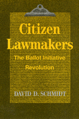

<body bgcolor="#FFFFFF" text="#000000" link="#0000FF" vlink="#CC0000" alink="#CC0000"><center><hr width="350" size="1" align="center" noshade>The stories of the individual activists and political groups that revitalized this use of Initiative and Referendum<hr width="350" size="1" align="center" noshade><p><a href="https://cdcshoppingcart.uchicago.edu/Cart/ChicagoBook.aspx?ISBN=9780877225942&&PRESS=temple" target="_top">Buy this book!</a> | <a href="https://cdcshoppingcart.uchicago.edu/Cart/Cart.aspx?PRESS=temple" target="_top">View Cart</a> | <a href="https://cdcshoppingcart.uchicago.edu/Cart/Cart.aspx?PRESS=temple" target="_top">Check Out</a></p><p></p></center><!--none//--><h1>Citizen Lawmakers</h1>
<H2>The Ballot Initiative Revolution</H2>
<h3>David D. Schmidt</h3>
<P>cloth 0-87722-594-X $32.95, May 89, <FONT COLOR=#990033>Out of Print</FONT>
<br>paper 0-87722-903-1 $30.95, Oct 91, <FONT COLOR=#990033>Out of Stock Unavailable</FONT>
<br>Electronic Book 1-43990-511-8 $34.95 <FONT COLOR=#990033>Out of Print</FONT>
<BR> 352 pp
</P><BLOCKQUOTE><I>"[B]oth an engrossing history and a guide showing how citizens can make their own laws directly, at the ballot box, when elected officials are unresponsive."</I>
<br>&#151<b>Ralph Nader</b><I></I></BLOCKQUOTE>
<p>After decades of disuse, a startling upsurge in the use of the Initiative and Referendum&#151law-making by citizen petition and popular vote&#151occurred in the 1970s and 1980s. In <I>Citizen Lawmakers</I>, David Schmidt tells the stories of the individual activists, such as Howard Jarvis and Ed Koupal, and the political groups that made this happen. While other studies have analyzed the statistics of the ballot initiative revolution, this book provides the personal, political, and historical contexts vital to understanding the causes and the tremendous impact of the trend toward ballot-box lawmaking over the last two decades. Schmidt demonstrates how "ordinary individuals, even in this age of monstrous bureaucracies and larger-than-life celebrities, can, and do, change this nation�s laws to make government more accountable."
<p>Although still neglected in contemporary political science texts, the initiative process has become the most dynamic, innovative arena of American politics. Between 1968 and 1982, the number of voter-initiated propositions on state ballots increased from 10 to 60, with issues moving from purely local to national movements, such as the Tax Revolt (heralded by California�s Proposition 13 in 1978), "Motor Voter" initiatives started in Arizona and Colorado, Bottle Bills and non-smoking ordinances, and the Nuclear Weapons Freeze votes of 1982. As the editor of a nationwide newsletter on the subject and a participant in some of the initiative and referendum campaigns he describes, David Schmidt brings to the writing a wealth of first-hand detail.
<p>After tracing the historical origins of the Initiative and Referendum, the book focuses on case studies of the most widespread ballot issues and the most prominent initiative campaign promoters in the 1970s and 1980s. Discussing recent efforts to put national initiative lawmaking rights into the federal Constitution, Schmidt makes a case for the ballot initiative process as an essential complement and corrective to the American system of lawmaking by elected representatives.
<p><I>Citizen Lawmakers</I> is also a handbook for activists. From his experiences in many states, Schmidt provides advice on gathering signatures, complying with state regulations, gaining media coverage, combating opponents� tactics, and raising money. This book concludes with appendixes that give a state-by-state capsule history of initiative use and voting results for each of the fifty states and include the results of the votes on propositions from the November 1988 election.
<BR>&nbsp;<h2>Reviews</h2>
<p><I>"As one of the nation's leading authorities on the referendum and initiative processes, David Schmidt has prepared a thoughtful, positive overview of one of the most significant electoral phenomena of our time."</I>
<br>&#151<b>Edmund G. Brown, Jr.</b>, former Governor of California
<p><I>"The definitive work on citizens and ballot initiatives.... This study offers citizen activists a manual on how to run a citizen campaign during the ballot initiative revolution and presents, in the appendixes, a comprehensive data on initiative voting in each of the states. The contribution to citizen activism and participatory democracy is the most significant characteristic of Schmidt's volume. The book is well written, well researched, and important. Strongly recommended for citizens interested in being counted once again in the American political system."</I>
<br>&#151<b><I>Choice</I></b>
<p><I>"An important work that addresses a wide audience.... Unlike much of the work written on the subject, this book provides the reader with both the historical perspective and empirical data.... This work should be read by those interested in the political process."</I>
<br>&#151<b><I>Perspectives on Political Science</I></b>
<p><I>"The book may convince some readers that ordinary people make better policy than politicians do."</I>
<br>&#151<b><I>California Lawyer</I></b>
<p><I>"Important reading for those who aspire to influence public policy.... [Schmidt] is at his absolute best and the book is at its most invaluable when it focuses on how to effectively us I&R."</I>
<br>&#151<b><I>Chicago Enterprise</I></b>
<BR>&nbsp;<h2>Contents</h2><P>
<p>Preface and Acknowledgments
<br>1. History
<br>2. Arguments For and Against
<br>3. The Story of Ed Koupal and People's Lobby
<br>4. Energy Crises
<br>5. Two Case Studies
<br>6. Tax Revolt: Conservatives Take the Initiative
<br>7. Ballots Against Bombs
<br>8. National Initiative
<br>9. Campaign Manual
<br>Appendix A: Initiative and Referendum Election Results, 1987-1988
<br>Appendix B: Development of the Initiative
<br>Appendix C: Statewide Initiatives Passed by Voters, 1970-1986
<br>Appendix D: Petitioning: A State-by-State Guide to Rights and Requirements
<br>Notes
<br>Index
</P><BR>&nbsp;<H2>About the Author(s)</H2>
<P><b>David D. Schmidt</b> is Director of the Initiative Resource Center in San Francisco and editor of the newsletter <I>Initiative & Referendum: The Power of the People!</I></P>
<BR><H2>Subject Categories</H2>
<p><A HREF="/tempress/political.html" TARGET="_top">Political Science and Public Policy</a>
</p>
<p align="center"><a href="https://cdcshoppingcart.uchicago.edu/Cart/ChicagoBook.aspx?ISBN=9780877225942&&PRESS=temple" target="_top">Buy this book!</a> | <a href="https://cdcshoppingcart.uchicago.edu/Cart/Cart.aspx?PRESS=temple" target="_top">View Cart</a> | <a href="https://cdcshoppingcart.uchicago.edu/Cart/Cart.aspx?PRESS=temple" target="_top">Check Out</a></p><p><font face="Arial" size="1"><a href="copyright.html" onMouseOver="window.status='Web Copyright Policy';return true;" onMouseOut="window.status=''" title="Web Copyright Policy">&copy;</a> 2015 <a href="http://www.temple.edu" target="new" onMouseOver="window.status='Link to Temple University home page';return true;" onMouseOut="window.status=''" title="Link to Temple University home page">Temple University</a>. All Rights Reserved. http://www.temple.edu/tempress/titles/513_reg.html</font></p>